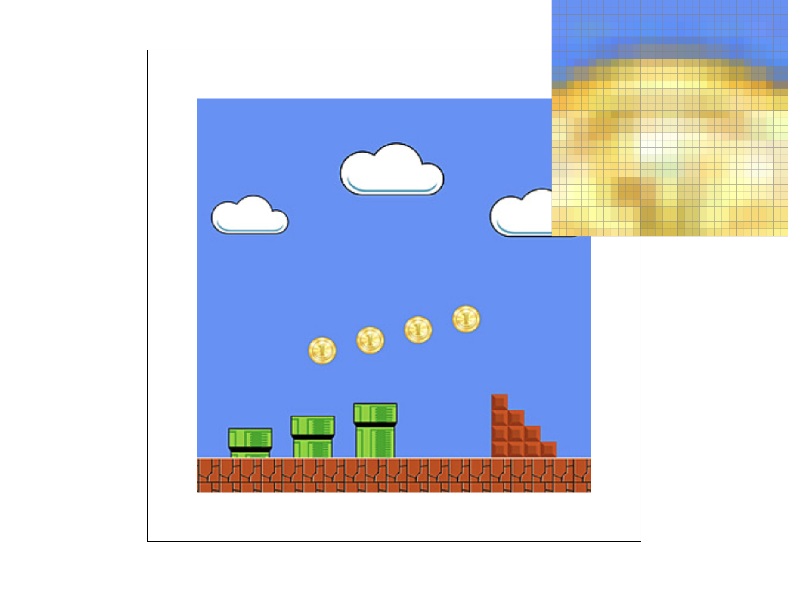

CS184/284A Spring 2025 Homework 1 Write-Up
Names: Mohammed Amin, Sean Tai
Link to webpage: cs184.eecs.berkeley.edu/sp25
Link to GitHub repository: cs184.eecs.berkeley.edu/sp25
Overview
We implemented a full rasterization pipeline from basic triangle drawing to texture filtering with mipmaps. We started with single-color triangle rasterization, then added supersampling using a sample buffer and resolve step to reduce jagged edges, implemented transforms for scene edits, used barycentric interpolation for smooth color blending, and extended that to texture mapping with interpolated UVs. We also implemented nearest and bilinear sampling methods when drawing the textured rectangle, then added level sampling with mipmaps (L_ZERO, L_NEAREST, and linear level blending) using UV derivatives.
This homework was definitely challenging at first, especially getting images to load correctly and getting comfortable with the C++ vector/math libraries. But step by step, we got much more comfortable with the workflow and the codebase. We also remember in Homework 0 we could not really tell the difference between the sampling methods when drawing the textured rectangle, and we did not clearly understand mipmaps when asked about them there. After implementing each method directly from the lecture slides in this homework, the differences are much clearer to us now, both visually and algorithmically.
Task 1: Drawing Single-Color Triangles
We first compute the bounding box that wraps the triangle from the minimum and maximum vertex coordinates and clamp it. We then iterate over each pixel inside this box and sample at the pixel center (x+0.5, y+0.5). To determine if the sample is inside the triangle, we use the point in triangle test and formulas from class to evaluate 3 edges. A point is inside if all three edge values have the same sign. This handles both clockwise and counter-clockwise triangles and includes boundary pixels. If the point is inside, we call fill_pixel(x, y, color). The algorithm only checks pixels within the triangle's bounding box and there's only 3 edge tests per pixel, so its runtime is proportional to the bounding box area, which matches the efficiency noted in the specification.
Task 2: Antialiasing by Supersampling
We treated each output pixel as a grid of \(\sqrt{\text{sample\_rate}} \times \sqrt{\text{sample\_rate}}\) subpixel samples stored insample_buffer. We updated buffer management so the sample buffer always resizes correctly with framebuffer size and sampling rate changes, and we modified triangle rasterization to test coverage at each subpixel center rather than only at the pixel center. Covered subpixels are written into the sample buffer, while points and lines are handled by filling all subsamples of a pixel with the same color so they still render correctly. At the end of rendering, we resolve samples by averaging each pixel’s subsample colors and writing the result to the 8-bit RGB framebuffer. Supersampling is useful because edge pixels can represent partial triangle coverage instead of a binary inside/outside result, which reduces jagged edge. You can see this in action where the sample rates 1, 4, and 16 show progressively smoother boundaries, especially around thin corners and steep edges.


Task 3: Transforms
We modified the robot mannequin to make both arms wave by rotating the last segment of each arm 90 degrees and applying a small translation to align them properly.
Task 4: Barycentric coordinates
Barycentric coordinates express any point inside a triangle as a weighted combination of the three vertices: \( V = \alpha V_A + \beta V_B + \gamma V_C \), where \( \alpha + \beta + \gamma = 1 \). Each weight tells you how close the point is to the corresponding vertex. When we assign a different color to each vertex (e.g. red, green, blue), the barycentric weights smoothly blend those colors across the triangle's interior, as shown below. They can be used to represent color, texture coords, etc.
Task 5: "Pixel sampling" for texture mapping
Pixel sampling is the process of deciding what texture color to use when a rasterized sample lands at a continuous UV coordinate that usually does not align exactly with a texel center. In my implementation, we first compute barycentric coordinates for each covered sample point in rasterize_textured_triangle, use them to interpolate the sample’s UV, and then sample the texture at mip level 0. For the two sampling methods, nearest sampling maps UV to texel space, picks the closest texel index, and returns that single texel color, which is fast but can look blocky and aliased. Bilinear sampling retrieves the four texels around the UV location and interpolates them using the slide’s lerp steps (horizontal lerps with alpha, then vertical lerp with beta), producing smoother results with slightly higher cost.

|

|

|

|
We used test2.svg and compared the same area with the pixel inspector for all four settings. In nearest + 1 sample, the zoom box looks very blocky and each texel edge is obvious. In nearest + 16 samples, the triangle edges look a little cleaner, but the texture itself is still blocky. In bilinear + 1 sample, the texture already looks smoother because nearby texels are blended instead of picking just one texel. In bilinear + 16 samples, it looks the best overall becuase it has smooth texture colors and cleaner shape edges. The biggest difference between nearest and bilinear shows up in places with lots of tiny color changes (like coastlines and grid lines in this map). Nearest jumps from one texel color to another, so it looks harsh and pixelated. Bilinear mixes nearby texels, so the color changes are more gradual and the image looks more natural.
Task 6: "Level Sampling" with mipmaps for texture mapping
Level sampling decides which mipmap resolution to use before doing pixel sampling. Instead of always sampling from the full-resolution texture, we estimate how quickly UV changes across one screen pixel and use that to choose a mip level. We implemented this by fillingSampleParams in rasterize_textured_triangle for each sample point: sp.p_uv at \((x,y)\), sp.p_dx_uv at \((x+1,y)\), and sp.p_dy_uv at \((x,y+1)\), plus psm and lsm. In get_level, we compute the UV differences, scale them by the base texture width/height, compute the footprint size \(L\), and return \(D=\log_2(L)\). We implemented the sample function which dispatches to the appropriate pixel sampling method (sample_nearest or sample_bilinear) at either level 0 (L_ZERO), the nearest mipmap level (L_NEAREST), or a linear blend between two adjacent mipmap levels (L_LINEAR) for trilinear filtering.
Tradeoffs: Pixel sampling is the cheapest, it requires no extra memory and only a small speed cost for bilinear, but its antialiasing power is limited to smoothing texel boundaries. Increasing the number of samples per pixel (supersampling) gives strong antialiasing, but multiplies memory and computation proportional with the sample rate. Level sampling (mipmaps) is a good in between, the precomputed mipmap chain costs only a bit more memory (around 1/3 as shown in discussion), adds minimal per-pixel overhead to select a level, and effectively reduces aliasing in minified regions where many texels map to one pixel.
We chose to use a image which is a level from Super Mario Bros mapped on a flat quad and captured the four required combinations below.
|

|
|

|

|
In this view showing one of the floating coins, the nearest-level outputs match the level-zero outputs where
L_ZERO + P_NEAREST and L_NEAREST + P_NEAREST look the same, and L_ZERO + P_LINEAR and L_NEAREST + P_LINEAR look the same. Nearest looks more blocky in the inspector, while bilinear gives smoother color transitions.